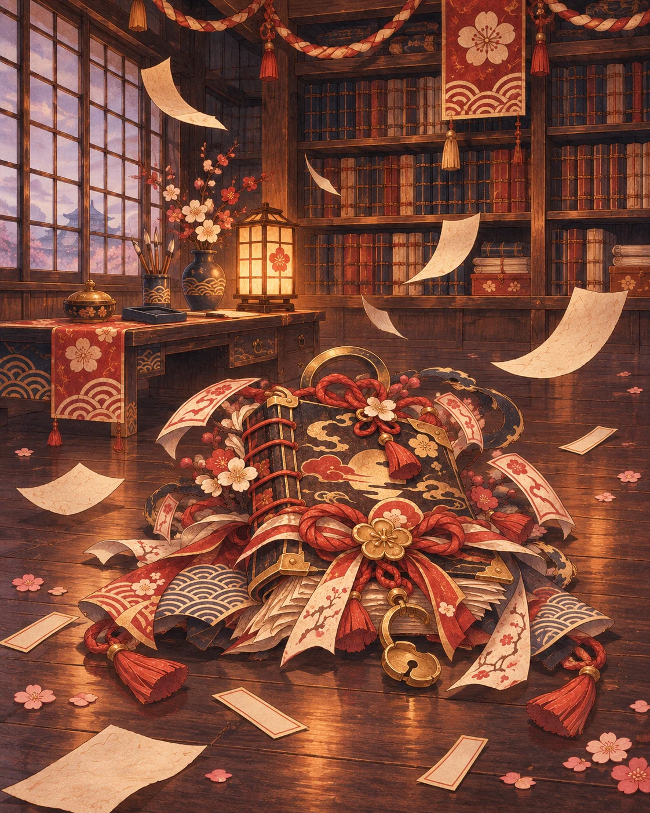
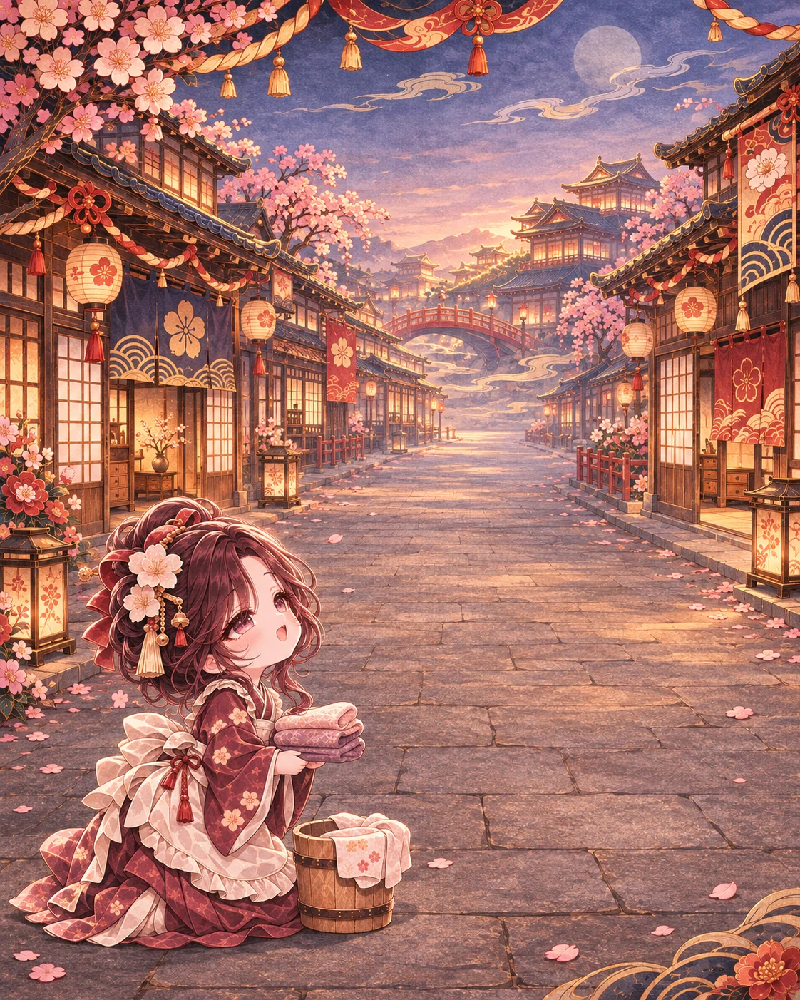
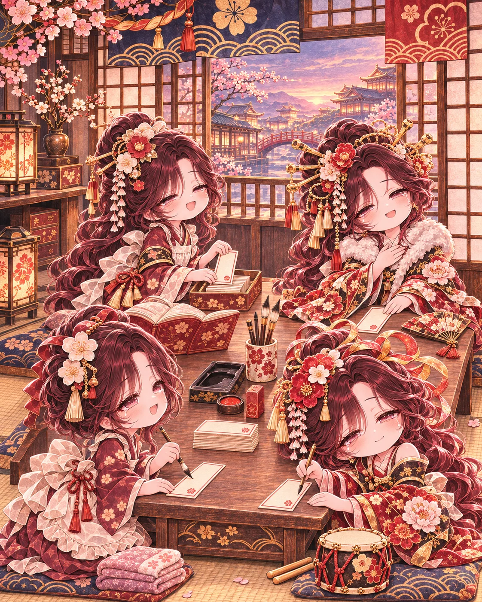
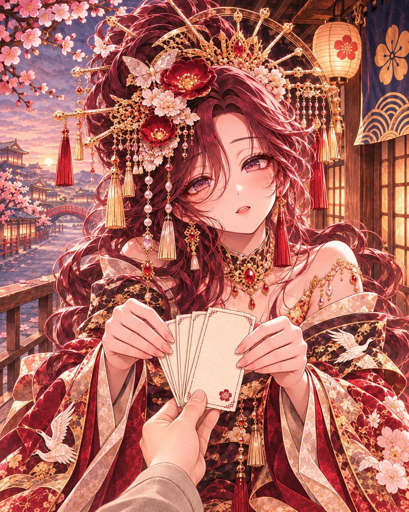
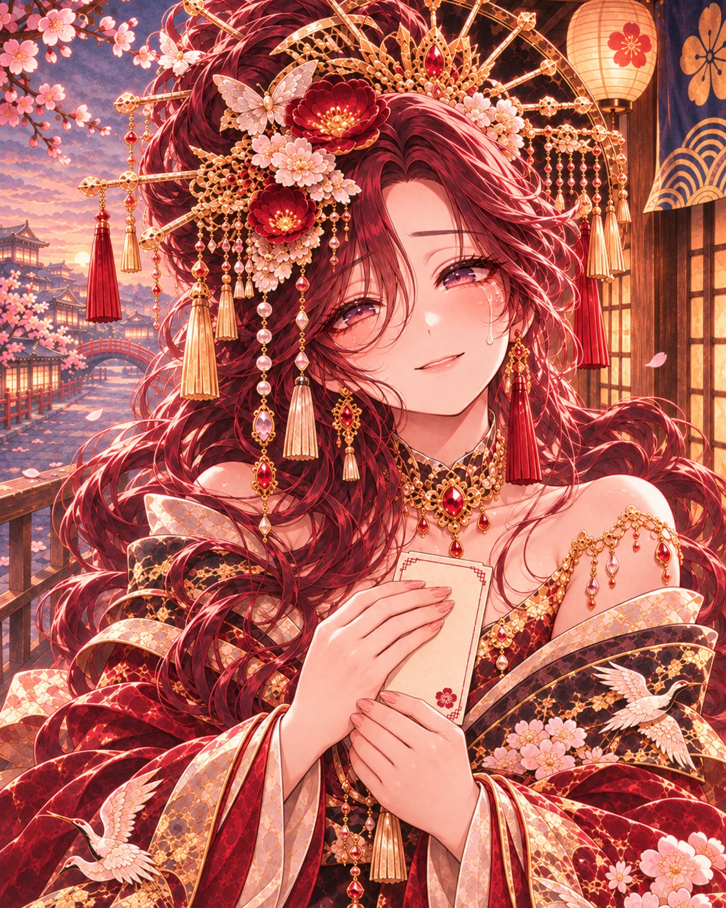
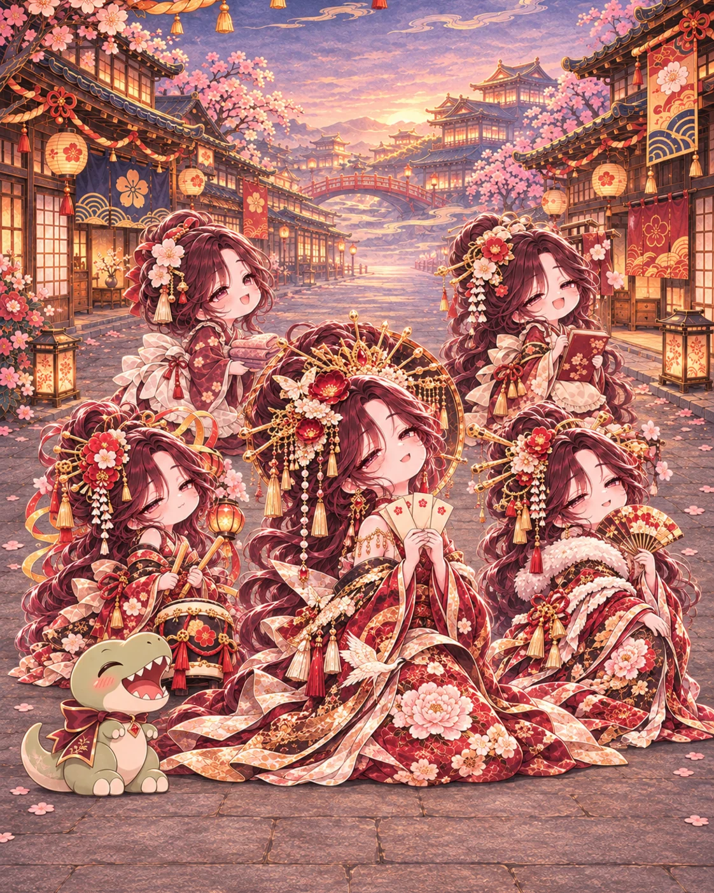

六張尾聲場景＋無名之簿透明戰敗姿態已完成。
花魁對齊 No.114，小禿對齊 No.110。






已確認：花魁與玩家本人，以第一人稱或不露臉、不固定性別的背影呈現。
繪圖服務額度用完，這張目前未完成。已備好人物視角、造型參考與繪製規格。
繪圖服務額度用完，這張目前未完成。已備好人物視角、造型參考與繪製規格。
繪圖服務額度用完，這張目前未完成。已備好人物視角、造型參考與繪製規格。